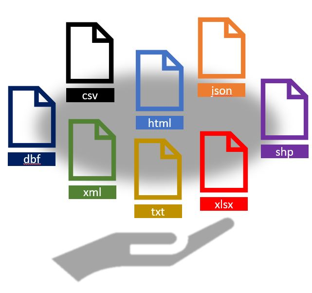
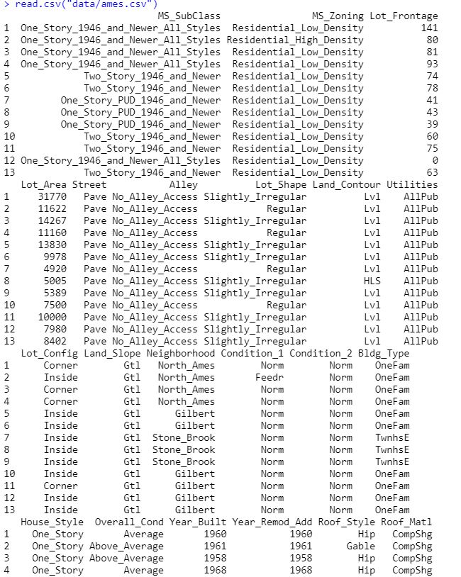
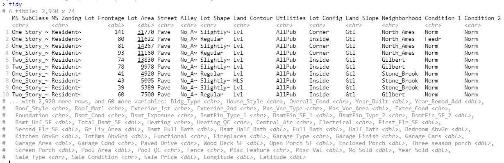

Capítulo 3 TRANSFORMACION Y MANIPULACION DE ESTRUCTURA DE DATOS

Como se ha mencionado anteriormente, existe un ciclo dentro de un proyecto de Ciencia de Datos que aborda desde la identificación del problema a resolver, hasta la definición de las acciones que serán detonadas a partir del resultado de un modelo validado.

Para efectos de este curso, tendremos el supuesto de que éstas definiciones y alcances ya están previamente decididos o en otro caso muy probable; no dependen de nosotros. Así, el curso estará enfocado al flujo de trabajo técnico que conlleva el análisis de los datos en la que se buscará la solución del problema.

Particularmente, R tiene bibliotecas especializadas que pueden ayudarnos en cada parte del camino.
3.1 Importación de datos
Existen diferentes archivos de los cuales puede recolectarse información, los más comunes son
 La paquetería base de R, contiene las funciones que eran la forma más común de introducir datos en R:
read.csv(file, header = TRUE, sep = ",", quote = "\"",
dec = ".", fill = TRUE, comment.char = "", ...)
read.table(file, header = FALSE, sep = "", quote = "\"'",
dec = ".", numerals = c("allow.loss", "warn.loss", "no.loss"),
row.names, col.names, as.is = !stringsAsFactors,
na.strings = "NA", colClasses = NA, nrows = -1,
skip = 0, check.names = TRUE, fill = !blank.lines.skip,
strip.white = FALSE, blank.lines.skip = TRUE,
comment.char = "#",
allowEscapes = FALSE, flush = FALSE,
stringsAsFactors = default.stringsAsFactors(),
fileEncoding = "", encoding = "unknown", text, skipNul = FALSE)Sin embargo, las funciones anteriores importan los marcos de datos a R de la forma ‘antigua,’ por otro lado, la paquetería readr fue desarrollado recientemente para lidiar con la lectura de archivos grandes rápidamente. El paquete proporciona reemplazos para funciones como read.table(), read.csv() entre otras. Esta paquetería proporciona funciones que suelen ser mucho más rápidas que las funciones base que proporciona R.

Ventajas de readr:
Por lo general, son mucho más rápidos (~ 10x) que sus funciones equivalentes.
Producen tibbles:
- No convierten vectores de caracteres en factores.
- No usan nombres de filas ni modifican los nombres de columnas.
Reproducibilidad
3.2 Lectura de datos
3.2.1 Archivos csv
A la hora de importar conjuntos de datos en R, uno de los formatos más habituales en los que hallamos información es en archivos separados por comas (comma separated values), cuya extensión suele ser .csv. En ellos encontramos múltiples líneas que recogen la tabla de interés, y en las cuales los valores aparecen, de manera consecutiva, separados por el carácter ,.
Para importar este tipo de archivos en nuestra sesión de R, se utiliza la función read_csv(). Para acceder a su documentación utilizamos el comando ?read_csv.
El único argumento que debemos de pasar a esta función de manera obligatoria, es file, el nombre o la ruta completa del archivo que pretendemos importar.
library(readr)
read_csv(
file,
col_names = TRUE,
col_types = NULL,
locale = default_locale(),
na = c("", "NA"),
quoted_na = TRUE,
quote = "\"",
comment = "")Algunas de las ventajas que utilizar read_csv() ofrece son:
- No convierte, automáticamente, las columnas con cadenas de caracteres a factores, como sí hacen por defecto las otras funciones base de R.
- Reconoce ocho clases diferentes de datos (enteros, lógicos, etc.), dejando el resto como cadenas de caracteres.
Veamos un ejemplo:
La base de datos llamada AmesHousing contiene un conjunto de datos con información de la Oficina del Tasador de Ames utilizada para calcular los valores tasados para las propiedades residenciales individuales vendidas en Ames, Iowa, de 2006 a 2010. FUENTES: Ames, Oficina del Tasador de Iowa.
Pueden descargar los datos para la clase aquí
base<- read.csv("data/ames.csv")
base
tidy<- read_csv("data/ames.csv")
tidy

¿Y si el archivo que necesitamos leer esta en excel?
3.2.2 Archivos xls y xlsx
La paquetería readxl facilita la obtención de datos tabulares de archivos de Excel. Admite tanto el formato .xls heredado como el formato .xlsx moderno basado en XML.
Esta paqueteía pone a disposición las siguientes funciones:
read_xlsx()lee un archivo con extensión xlsx.
read_xlsx(path,
sheet = NULL,
range = NULL,
col_names = TRUE,
col_types = NULL,
na = "",
trim_ws = TRUE,
skip = 0,
n_max = Inf,
guess_max = min(1000, n_max),
progress = readxl_progress(),
.name_repair = "unique")read_xls()lee un archivo con extensión xls.
read_xls(path,
sheet = NULL,
range = NULL,
col_names = TRUE,
col_types = NULL,
na = "",
trim_ws = TRUE,
skip = 0,
n_max = Inf,
guess_max = min(1000, n_max),
progress = readxl_progress(),
.name_repair = "unique")read_excel()determina si el archivo es de tipo xls o xlsx para después llamar a una de las fuciones mencionadas anteriormente.
read_excel(path,
sheet = NULL,
range = NULL,
col_names = TRUE,
col_types = NULL,
na = "",
trim_ws = TRUE,
skip = 0,
n_max = Inf,
guess_max = min(1000, n_max),
progress = readxl_progress(),
.name_repair = "unique")EJERCICIO: Leer archivo excel de la carpeta del curso
3.2.3 Archivos json
Se utiliza la función fromJSON de la paquetería rjson
library(rjson)
base_json <- fromJSON("data/ames.json")
base_json3.2.4 Bases de Datos
En muchos de los casos la información estará dentro de un Sistema Manejador de Bases de Datos, existen bibliotecas que nos permiten establecer las conexiones con ellas, algunos ejemplos son:
- ODBC
- DBI
Un ejemplo con un SMBD como SQL Server:
3.2.4.1 Microsoft SQL Server
Configuración de conexión:
Se necesitan seis configuraciones para realizar una conexión:
- Controlador : consulte la sección Controladores para obtener más información
- Servidor : una ruta de red al servidor de la base de datos.
- Base de datos : el nombre de la base de datos.
- UID : el ID de red del usuario o la cuenta local del servidor
- PWD : la contraseña de la cuenta
- Puerto : debe establecerse en 1433
Para establecer la conexión con la base de datos:
library(DBI)
con <- DBI::dbConnect(odbc::odbc(),
Driver = "[your driver's name]",
Server = "[your server's path]",
Database = "[your database's name]",
UID = rstudioapi::askForPassword("Database user"),
PWD = rstudioapi::askForPassword("Database password"),
Port = 1433)Información sobre la base de datos:
El odbcpaquete le brinda herramientas para explorar objetos y columnas en la base de datos.
# Top level objects
odbcListObjects(con)
# Tables in a schema
odbcListObjects(con, catalog="mydb", schema="dbo")
# Columns in a table
odbcListColumns(con, catalog="mydb", schema="dbo", table="cars")
# Database structure
odbcListObjectTypes(con)Consultas con SQL: Para consultas interactivas, utilice dbGetQuery()para enviar una consulta y obtener los resultados. Para obtener los resultados por separado, utilice dbSendQuery()y dbFetch(). El n=argumento en dbFetch()se puede utilizar para obtener resultados parciales.
# Return the results for an arbitrary query
dbGetQuery(con, "SELECT speed, dist FROM cars")
# Fetch the first 100 records
query <- dbSendQuery(con, "SELECT speed, dist FROM cars")
dbFetch(query, n = 10)
dbClearResult(query)Puedes usar los ejemplos anteriores para probar con diferentes consultas y bases de datos.
Tidyverse a SQL
Tengamos un ejemplo de manera local:
remotes::install_version("RSQLite", version = "2.2.5")library(dplyr)
library(dbplyr)
library(RSQLite)
con <- src_memdb()
copy_to(con, storms, overwrite = T)
tbl_storms <- tbl(con, "storms")
query <- tbl_storms %>%
select(name, year, month, day, hour, status,
wind, pressure) %>%
group_by(status) %>%
summarise(
mean_wind = mean(wind, na.rm = T),
sd_wind = sd(wind, na.rm = T),
mean_pressure = mean(pressure, na.rm = T),
se_pressure = sd(pressure, na.rm = T)
) %>%
arrange(mean_wind) %>%
right_join(tbl_storms, by = "status") %>%
# relocate(name, .after = status) %>%
# relocate(wind, .after = mean_pressure) %>%
# relocate(pressure, .after = wind) %>%
select(-lat, -long, -hu_diameter, -ts_diameter)
query %>% show_query()## <SQL>
## SELECT `status`, `mean_wind`, `sd_wind`, `mean_pressure`, `se_pressure`, `name`, `year`, `month`, `day`, `hour`, `category`, `wind`, `pressure`
## FROM (SELECT `RHS`.`status` AS `status`, `mean_wind`, `sd_wind`, `mean_pressure`, `se_pressure`, `name`, `year`, `month`, `day`, `hour`, `lat`, `long`, `category`, `wind`, `pressure`, `ts_diameter`, `hu_diameter`
## FROM `storms` AS `RHS`
## LEFT JOIN (SELECT `status`, AVG(`wind`) AS `mean_wind`, STDEV(`wind`) AS `sd_wind`, AVG(`pressure`) AS `mean_pressure`, STDEV(`pressure`) AS `se_pressure`
## FROM (SELECT `name`, `year`, `month`, `day`, `hour`, `status`, `wind`, `pressure`
## FROM `storms`)
## GROUP BY `status`) AS `LHS`
## ON (`LHS`.`status` = `RHS`.`status`)
## )Para poder revisar la consulta, puedes ejecutar:
query
collect(query)3.3 Consultas de datos con tidyverse
Ahora que ya sabemos como cargar datos, aprenderemos como manipularlos con dplyr. El paquete dplyr proporciona un conjunto de funciones muy útiles para manipular data frames y así reducir el número de repeticiones, la probabilidad de cometer errores y el número de caracteres que hay que escribir. Como valor extra, puedes encontrar que la gramática de dplyr es más fácil de entender.
Revisaremos algunas de sus funciones más usadas (verbos), así como el uso de pipes (%>%) para combinarlas.
select()
filter()
arrange()
mutate()
summarise()
join()
group_by()
Primero tenemos que instalar y cargar la paquetería (parte de tidyverse):
# install.packages("dplyr")
library(dplyr)Usaremos el dataset iris que se encuentra en la paquetería datasets (el alumno puede hacer el ejercicio con la base AmesHousing)
head(iris,10)## Sepal.Length Sepal.Width Petal.Length Petal.Width Species
## 1 5.1 3.5 1.4 0.2 setosa
## 2 4.9 3.0 1.4 0.2 setosa
## 3 4.7 3.2 1.3 0.2 setosa
## 4 4.6 3.1 1.5 0.2 setosa
## 5 5.0 3.6 1.4 0.2 setosa
## 6 5.4 3.9 1.7 0.4 setosa
## 7 4.6 3.4 1.4 0.3 setosa
## 8 5.0 3.4 1.5 0.2 setosa
## 9 4.4 2.9 1.4 0.2 setosa
## 10 4.9 3.1 1.5 0.1 setosa3.3.1 select()
Observamos que nuestros datos tienen 150 observaciones y 5 variables, con select() podemos seleccionar las variables que le indiquemos.
select_ejemplo<-iris %>% select(Sepal.Length,Petal.Length,Species)
head(select_ejemplo,10)## Sepal.Length Petal.Length Species
## 1 5.1 1.4 setosa
## 2 4.9 1.4 setosa
## 3 4.7 1.3 setosa
## 4 4.6 1.5 setosa
## 5 5.0 1.4 setosa
## 6 5.4 1.7 setosa
## 7 4.6 1.4 setosa
## 8 5.0 1.5 setosa
## 9 4.4 1.4 setosa
## 10 4.9 1.5 setosaEl operador pipe (%>%) se usa para conectar múltiples acciones, en este caso solo le indicamos que de la base iris seleccionara 3 varibles y que guardara este nuevo data frame en la variable select_ejemplo.
Con select() y contains podemos seleccionar varibles con alguna cadena de texto.
select_ejemplo<-iris %>% select(contains("Sepal"))
head(select_ejemplo,5)## Sepal.Length Sepal.Width
## 1 5.1 3.5
## 2 4.9 3.0
## 3 4.7 3.2
## 4 4.6 3.1
## 5 5.0 3.6De igual manera, con select(), ends_with y start_with() podemos seleccionar que inicien o terminen con alguna cadena de texto.
select_ejemplo<-iris %>% select(starts_with("Sepal"),ends_with("Length"))
head(select_ejemplo,5)## Sepal.Length Sepal.Width Petal.Length
## 1 5.1 3.5 1.4
## 2 4.9 3.0 1.4
## 3 4.7 3.2 1.3
## 4 4.6 3.1 1.5
## 5 5.0 3.6 1.4Funciones útiles para select():
contains(): Selecciona variables cuyo nombre contiene la cadena de texto.
ends_with(): Selecciona variables cuyo nombre termina con la cadena de caracteres.
everything(): Selecciona todas las columnas.
matches(): Selecciona las variables cuyos nombres coinciden con una expresión regular.
num_range(): Selecciona las variables por posición.
one_of(): Selecciona variables cuyos nombres están en un grupo de nombres.
start_with(): Selecciona variables cuyos nombres empiezan con la cadena de caracteres.
3.3.2 filter()
La función filter nos permite filtrar filas según una condición, primero notemos que la variable Species tiene tres categorías.
table(iris$Species)##
## setosa versicolor virginica
## 50 50 50Ahora usaremos la función filter para quedarnos solo con las observaciones de la especie virginica.
ejemplo_filter<- iris %>% filter(Species=="virginica")
head(ejemplo_filter,5)## Sepal.Length Sepal.Width Petal.Length Petal.Width Species
## 1 6.3 3.3 6.0 2.5 virginica
## 2 5.8 2.7 5.1 1.9 virginica
## 3 7.1 3.0 5.9 2.1 virginica
## 4 6.3 2.9 5.6 1.8 virginica
## 5 6.5 3.0 5.8 2.2 virginicaTambién se puede usar para filtrar variables numéricas:
ejemplo_filter<- iris %>% filter(Sepal.Length>5 & Sepal.Width>=3.5)
head(ejemplo_filter,5)## Sepal.Length Sepal.Width Petal.Length Petal.Width Species
## 1 5.1 3.5 1.4 0.2 setosa
## 2 5.4 3.9 1.7 0.4 setosa
## 3 5.4 3.7 1.5 0.2 setosa
## 4 5.8 4.0 1.2 0.2 setosa
## 5 5.7 4.4 1.5 0.4 setosaNotemos que en el ejemplo anterior usamos &, que nos ayuda a filtrar por dos condiciones.
También podemos usar | para filtrar por alguna de las dos condiciones.
ejemplo_filter<- iris %>% filter(Sepal.Length>5 | Sepal.Width>=3.5)
head(ejemplo_filter,5)## Sepal.Length Sepal.Width Petal.Length Petal.Width Species
## 1 5.1 3.5 1.4 0.2 setosa
## 2 5.0 3.6 1.4 0.2 setosa
## 3 5.4 3.9 1.7 0.4 setosa
## 4 5.4 3.7 1.5 0.2 setosa
## 5 5.8 4.0 1.2 0.2 setosaLas condiciones pueden ser expresiones lógicas construidas mediante los operadores relacionales y lógicos:
< : Menor que
> : Mayor que
= : Igual que
<= : Menor o igual que
>= : Mayor o igual que
!= : Diferente que
%in% : Pertenece al conjunto
is.na : Es NA
!is.na : No es NA
3.3.3 arrange()
La función arrange() se utiliza para ordenar las filas de un data frame de acuerdo a una o varias variables.
Por defecto arrange() ordena las filas por orden ascendente:
ejemplo_arrange<- iris %>% arrange(Sepal.Length)
head(ejemplo_arrange,10)## Sepal.Length Sepal.Width Petal.Length Petal.Width Species
## 1 4.3 3.0 1.1 0.1 setosa
## 2 4.4 2.9 1.4 0.2 setosa
## 3 4.4 3.0 1.3 0.2 setosa
## 4 4.4 3.2 1.3 0.2 setosa
## 5 4.5 2.3 1.3 0.3 setosa
## 6 4.6 3.1 1.5 0.2 setosa
## 7 4.6 3.4 1.4 0.3 setosa
## 8 4.6 3.6 1.0 0.2 setosa
## 9 4.6 3.2 1.4 0.2 setosa
## 10 4.7 3.2 1.3 0.2 setosa
Si las queremos ordenar de forma ascendente lo haremos del siguiente modo:
ejemplo_arrange<- iris %>% arrange(desc(Sepal.Length))
head(ejemplo_arrange,10)## Sepal.Length Sepal.Width Petal.Length Petal.Width Species
## 1 7.9 3.8 6.4 2.0 virginica
## 2 7.7 3.8 6.7 2.2 virginica
## 3 7.7 2.6 6.9 2.3 virginica
## 4 7.7 2.8 6.7 2.0 virginica
## 5 7.7 3.0 6.1 2.3 virginica
## 6 7.6 3.0 6.6 2.1 virginica
## 7 7.4 2.8 6.1 1.9 virginica
## 8 7.3 2.9 6.3 1.8 virginica
## 9 7.2 3.6 6.1 2.5 virginica
## 10 7.2 3.2 6.0 1.8 virginica3.3.4 mutate()
Con la función mutate() podemos computar tranformaciones de variables en un data frame. A menudo, tendremos la necesidad de crear nuevas variables que se calculan a partir de variables existentes,mutate() nos proporciona una interface clara para realizar este tipo de operaciones.
Por ejemplo haremos la suma de las variables Sepal.Lenght y Sepal.Width:
ejemplo_mutate<- iris %>% select(Sepal.Length,Sepal.Width) %>%
mutate(Suma=Sepal.Length+Sepal.Width)
head(ejemplo_mutate,5)## Sepal.Length Sepal.Width Suma
## 1 5.1 3.5 8.6
## 2 4.9 3.0 7.9
## 3 4.7 3.2 7.9
## 4 4.6 3.1 7.7
## 5 5.0 3.6 8.6Notemos que en el ejemplo anterior usamos dos pipes (%>%), como habiamos mencionado se pueden usar los necesarios para combinar funciones.
3.3.5 summarise()
La función summarise() funciona de forma análoga a la función mutate, excepto que en lugar de añadir nuevas columnas crea un nuevo data frame.
Podemos usar el ejemplo anterior y calcular la media de la varible creada Suma:
ejemplo_summarise<- iris %>% select(Sepal.Length,Sepal.Width) %>%
mutate(Suma=Sepal.Length+Sepal.Width) %>%
summarise(Media_Suma=mean(Suma))
ejemplo_summarise## Media_Suma
## 1 8.900667Solo fue necesario agregar un pipe, especificar el nombre de la varible creada y la operación a realizar.
A continuación se muestran funciones que trabajando conjuntamente con la función summarise() facilitarán nuestro trabajo diario. Las primeras pertenecen al paquete base y las otras son del paquete dplyr. Todas ellas toman como argumento un vector y devuelven un único resultado:
min(), max() : Valores max y min.
mean() : Media.
median() : Mediana.
sum() : Suma de los valores.
var(), sd() : Varianza y desviación estandar.
first() : Primer valor en un vector.
last() : El último valor en un vector
n() : El número de valores en un vector.
n_distinc() : El número de valores distintos en un vector.
nth() : Extrar el valor que ocupa la posición n en un vector.
Mas adelante veremos como combinar esta función con la función group_by.
3.3.6 group_by()
La función group_by() agrupa un conjunto de filas seleccionado en un conjunto de filas de resumen de acuerdo con los valores de una o más columnas o expresiones.
Usaremos el ejemplo anterior, primero creamos nuestra nueva variable Suma, despues agrupamos por especie y al final sacamos la media de la variable Suma pero esta vez, por la función group_by, nos regresara una media por cada grupo creado, es decir, nos regresara el promedio de la suma por especie.
ejemplo_groupby<- iris %>%
mutate(Suma=Sepal.Length+Sepal.Width) %>%
group_by(Species) %>%
summarise(Media_Suma=mean(Suma))
ejemplo_groupby## # A tibble: 3 × 2
## Species Media_Suma
## <fct> <dbl>
## 1 setosa 8.43
## 2 versicolor 8.71
## 3 virginica 9.563.3.7 join()
Existen 4 funciones para combinar data frames:
- inner_join(): Regresa todas las observaciones de x que tiene valores que coinciden en y, regresa todas las columnas de x y y
- left_join(): Regresa todas las observaciones de x y las columnas de x y y. Observaciones en x que no esten en y tendran NAs en sus nuevas columnas.
- right_join(): Regresa todas las observaciones de y y las columnas de y y x. Observaciones en y que no esten en x tendran NAs en sus nuevas columnas.
- full_join(): Regresa todas las columnas de x y y

Usaremos los datasets band_instruments y band_members para mostrar algunos ejemplos.
band_instruments## # A tibble: 3 × 2
## name plays
## <chr> <chr>
## 1 John guitar
## 2 Paul bass
## 3 Keith guitarband_members## # A tibble: 3 × 2
## name band
## <chr> <chr>
## 1 Mick Stones
## 2 John Beatles
## 3 Paul BeatlesEn este caso la función inner_join() nos devuelve todas las varibles con las observaciones que tienen texto igual en la varible name de los data frames band_members y band_instruments.
inner_join(band_members,band_instruments, by = "name")## # A tibble: 2 × 3
## name band plays
## <chr> <chr> <chr>
## 1 John Beatles guitar
## 2 Paul Beatles bassAhora con la función left_join nos regresa todas las observaciones de band_members y todas las varibles de ambos data frames, con NAs en las observaciones de band_members que no tengan un valor en la varible plays de band_instruments.
left_join(band_members,band_instruments, by = "name")## # A tibble: 3 × 3
## name band plays
## <chr> <chr> <chr>
## 1 Mick Stones <NA>
## 2 John Beatles guitar
## 3 Paul Beatles bassLa función right_join funciona igual que left_join solo qur ahora toma las observaciones de band_instrument.
right_join(band_members,band_instruments, by = "name")## # A tibble: 3 × 3
## name band plays
## <chr> <chr> <chr>
## 1 John Beatles guitar
## 2 Paul Beatles bass
## 3 Keith <NA> guitarLa función full_join junta todas las obervaciones de ambos data frames poninedo NAs donde no se tenga un valor.
full_join(band_members,band_instruments, by = "name")## # A tibble: 4 × 3
## name band plays
## <chr> <chr> <chr>
## 1 Mick Stones <NA>
## 2 John Beatles guitar
## 3 Paul Beatles bass
## 4 Keith <NA> guitartidyr EL objetivo de tidyr es crear tidy data, un formato que hace que el manejo de los datos sea más semcillo, en esta ocasión revisaremos dos funciones, pivot_longer() y pivot_wider()
3.3.8 pivot_longer()
La función pivot_longer sirve para incrementar el número de renglones y disminuir el número de columnas, uasaremos el dataset table4a de la paquetería tidyr.
table4a## # A tibble: 3 × 3
## country `1999` `2000`
## * <chr> <int> <int>
## 1 Afghanistan 745 2666
## 2 Brazil 37737 80488
## 3 China 212258 2137663.3.8.1 Ejemplo pivot_longer()
Un problema común es cuando en un dataset los nombres de las columnas no representan nombres de variables, sino que representan los valores de una variable, en nuestro caso los nombres de las columnas 1999 y 2000 representan los valores de la variable año, los valores en las columnas 1999 y 2000 representan valores de la variable casos y cada fila representa dos observaciones en lugar de una.
Los parámetros que usaremos para pivotear son:
El conjunto de columnas cuyos nombres son valores y no variables. En este ejemplo son las columnas 1999 y 2000.
El nombre de la variable cuyos valores forman los nombres de las columnas. Llamaremos a esto key (clave) y en este caso corresponde a anio.
El nombre de la variable cuyos valores están repartidos por las celdas. Llamaremos a esto value (valor) y en este caso corresponde al número de casos.
3.3.8.2 Ejemplo pivot_longer()
table4a %>%
pivot_longer(
cols = c(`1999`, `2000`),
names_to = "año",
values_to = "casos"
)## # A tibble: 6 × 3
## country año casos
## <chr> <chr> <int>
## 1 Afghanistan 1999 745
## 2 Afghanistan 2000 2666
## 3 Brazil 1999 37737
## 4 Brazil 2000 80488
## 5 China 1999 212258
## 6 China 2000 2137663.3.9 pivot_wider()
La función pivot_wider sirve para incrementar el número de columnas y disminuir el número de renglones, uasaremos el dataset table4a de la paquetería tidyr.
la función pivot_wider() es lo opuesto de pivot_longer(). Se usa cuando una observación aparece en múltiples filas. Por ejemplo, considera la tabla2: una observación es un país en un año, pero cada observación aparece en dos filas.
table2## # A tibble: 12 × 4
## country year type count
## <chr> <int> <chr> <int>
## 1 Afghanistan 1999 cases 745
## 2 Afghanistan 1999 population 19987071
## 3 Afghanistan 2000 cases 2666
## 4 Afghanistan 2000 population 20595360
## 5 Brazil 1999 cases 37737
## 6 Brazil 1999 population 172006362
## 7 Brazil 2000 cases 80488
## 8 Brazil 2000 population 174504898
## 9 China 1999 cases 212258
## 10 China 1999 population 1272915272
## 11 China 2000 cases 213766
## 12 China 2000 population 12804285833.3.9.1 Ejemplo pivot_wider()
Para ordenar esto, primero analizaremos la representación, esta vez, solo necesitamos dos parámetros:
La columna desde la que obtener los nombres de las variables. En este caso corresponde a tipo.
La columna desde la que obtener los valores. En este caso corresponde a cuenta.
table2 %>%
pivot_wider(
names_from = type,
values_from = count
)## # A tibble: 6 × 4
## country year cases population
## <chr> <int> <int> <int>
## 1 Afghanistan 1999 745 19987071
## 2 Afghanistan 2000 2666 20595360
## 3 Brazil 1999 37737 172006362
## 4 Brazil 2000 80488 174504898
## 5 China 1999 212258 1272915272
## 6 China 2000 213766 1280428583